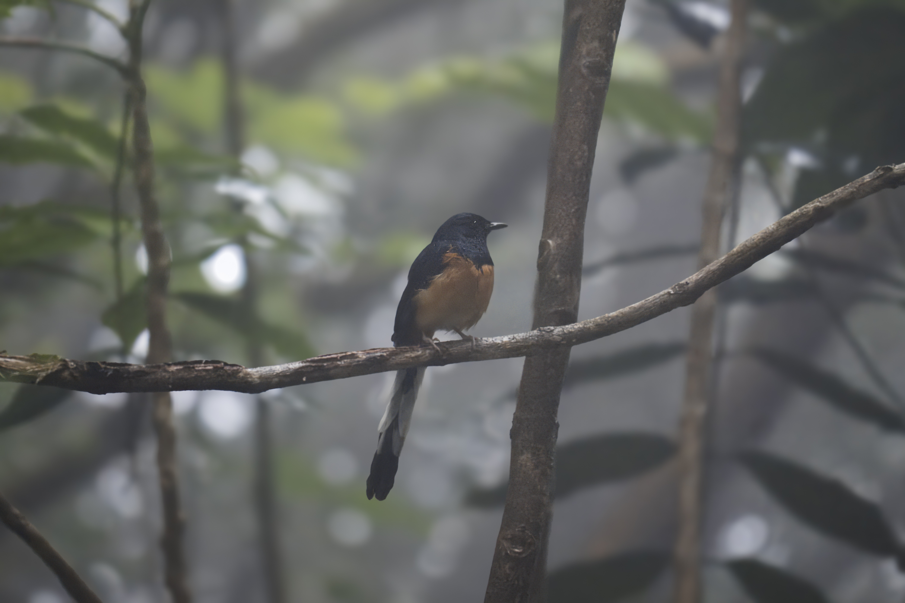
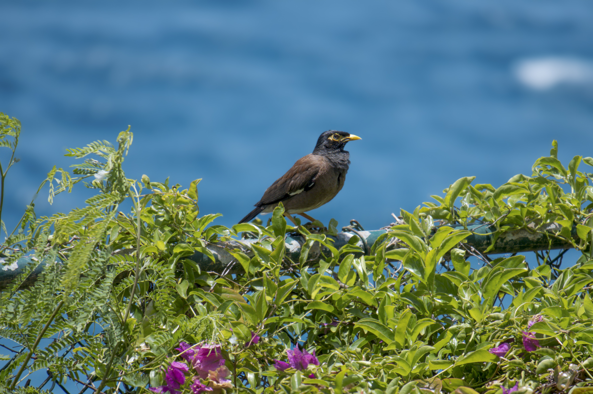
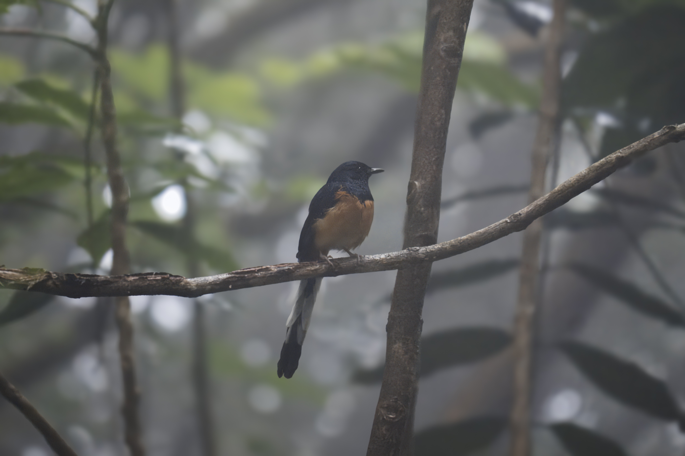
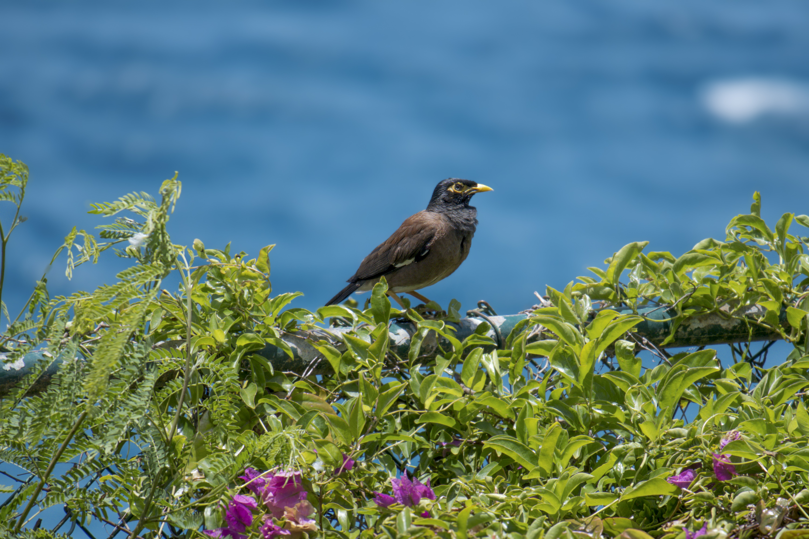

I spent the last week on Maui. The Hawaiian islands are lush and tropical on the windward side - an ideal habitat for many bird species. However, their remoteness has limited the amount and diversity of bird species that live on the island.
My Merlin Bird ID app says there are only ~50 bird species commonly seen around Maui in July. By contrast, there are over 150 "likely birds" in Chicago this time of year.
Still, Hawaii has some strange, beautiful birds. On a hike along the Waihe’e Ridge Trail, we spotted a Warbling white-eye, a White-rumped shama, and several other species we couldn’t quite place. Everywhere there are people, there are sure to be many Common myna (a starling relative), Red-headed cardinals (a weird little bird compared to the ubiquitous Northern cardinal on the mainland), Java sparrows (attractive little sparrows), and Zebra doves. Despite the limited diversity overall, Hawaii is still a paradise for many bird species.
If you're ever in Maui, be sure to hike around the West Maui Forest Preserve on the NW part of the island or anywhere along the road to Hāna on Maui's NE corner. Your effort will be rewarded with breathtaking views and, of course, many interesting birds. Happy birding!